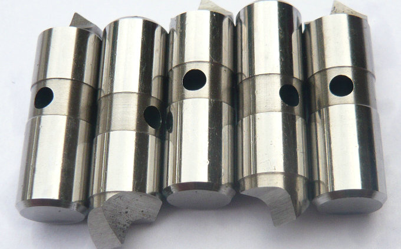

Präzisions-Mitnehmerbolzen für Stirnseitenmitnehmer – Ihr zuverlässiger OEM-Partner!
Wir sind ein Hersteller aus China für hochwertige Mitnahmebolzen und beliefern führende Hersteller von Stirnseitenmitnehmern sowie Anwender aus der Dreh- und Schleiftechnik.


In der modernen Zerspanungstechnik sind Stirnseitenmitnehmer (auch als Face Driver bekannt) unverzichtbare Werkzeuge für die wirtschaftliche Bearbeitung von Wellen und rotationssymmetrischen Bauteilen. Das Herzstück dieser Spannsysteme bilden die Antriebselemente, die kraftschlüssig den Drehmoment auf das Werkstück übertragen.


Unsere Kernkompetenz liegt in der Fertigung von individuellen Mitnehmerbolzen, die exakt auf die Geometrie und die Anforderungen Ihres Stirnseitenmitnehmers abgestimmt sind. Ob für Standard-Face Driver oder kundenspezielle Sonderlösungen – wir produzieren Antriebsstifte in unterschiedlichsten Härtegraden, Toleranzen und Oberflächengüten. Typische Werkstoffe sind Werkzeugstähle nach DIN EN / W-Nr. 1.2355 (oder 1.2357), die den höchsten Verschleißschutz garantieren und Härten bis über 60 HRC erreichen.
Arten von Mitnehmerbolzen für Stirnseitenmitnehmers
| 1 | Elastische Stirnseitenmitnehmer, Universall-Stirnseitenmitnehme | ||||||||
| 2 | Stirnseitenmitnehmer für Drehmaschinen | ||||||||
| 3 | Stirnseitenmitnehmer für Schwerzerspanungs-Drehmaschinen | ||||||||
| 4 | fStirnseitenmitnehmer für Verzahnungs-Drehmaschinen, eingesetzt in ultrapräzisen Rundschleifmaschinen | ||||||||
| 5 | Stirnseitenmitnehmer für ultrapräzise Rundschleifmaschinen | ||||||||
| 6 | Stirnseitenmitnehmer für Schleifzentren, hochpräzise und schwere rotierende Spitzen | ||||||||
| 7 | Nicht standardisierte Stirnseitenmitnehmer (Sonder-Stirnseitenmitnehmer) | ||||||||
Als OEM-Zulieferer wissen wir, worauf es bei Serien- und Einzelfertigung ankommt: Prozesssicherheit – Jeder einzelne Antriebsstift wird nach Ihren Zeichnungsvorgaben gefertigt und einer 100%-Qualitätskontrolle unterzogen. Wirtschaftlichkeit – Durch optimierte Fertigungsabläufe bieten wir wettbewerbsfähige Preise, ohne Kompromisse bei der Präzision. Flexibilität – Kleine Stückzahlen, Musterteile oder Großserien: Wir realisieren Ihre Bestellung termingerecht. Liefersicherheit – Dank eigener Lagerkapazitäten beliefern wir Sie auch bei kurzfristigem Bedarf.
Testen Sie unsere Leistungsfähigkeit mit einer ersten Referenzcharge. Senden Sie uns einfach Ihre Zeichnung oder Musterteile zu. Wir ermitteln die optimale Geometrie und Härte für Ihren Einsatzfall. Gemeinsam stellen wir sicher, dass Ihr Stirnseitenmitnehmer wieder zuverlässig seine volle Leistung bringt.
- Startseite
- Produkte
- Kontakt
- Exzentrische Mitnehmerbolzen
- offset driving parts
- half offset drive pins
- central driver parts
- standard/ Fixed driving pins
- Lowered drive parts
- clockwise driver pins
- counterclockwise driving parts
- full width drive pins
- Lasting driver parts
- chisel-edged driving pins
- floating drive parts
- power-operated driver pins
- hydraulic driving parts
- mechanical drive pins
- movable driver parts
- fixed driving pins
- carbide driver pins
- tool steel S7 driving parts
- changeable pins
- face drive pins